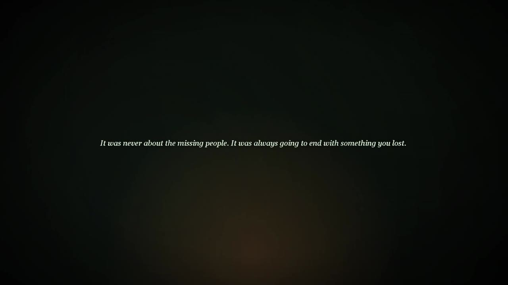
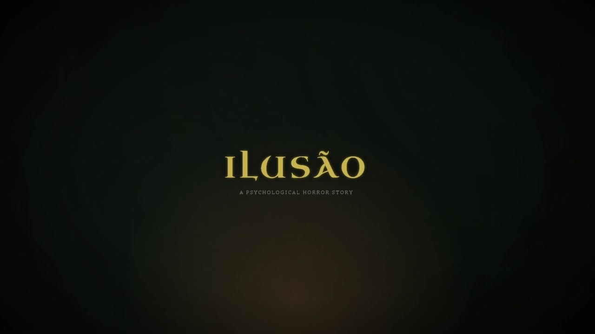

Ilusão
Writer · Narrative designer · Developer
A psychological horror interactive fiction game set in the forests of Louveira, Brazil, 1973.
The game
You play as Detective Mendonça, assigned to investigate a series of unexplained disappearances near the edge of town. The locals won't talk. The evidence makes no sense. And the forest at the end of the road has been there longer than anyone can remember.
As you dig deeper into the case, interviewing witnesses, researching the land, following the trail of the missing, you will eventually have to go in yourself. What waits inside is not what you expect.
ILUSÃO draws from the rich tradition of Brazilian folklore, weaving creatures from legend into a story about guilt, grief, and the things we carry with us into the dark. The forest does not just take people. It learns them.
My role
I was responsible for the full production and creation of the game. I did the narrative design, the coding and the visuals. The game was built using the Twine engine, and I used Harlowe as the programming language, which is specific to that engine.
I was also responsible for running playtests and getting feedback from players to improve the gameplay, the story and the general feel. The game can be played in both English and Portuguese, and I wrote both versions.
In short
- Full production and creation of the game
- Narrative design and writing, in English and Portuguese
- Coding in Twine with Harlowe
- Visuals
- Ran playtests and used the feedback to improve gameplay, story and feel
- Released it on itch.io and made the official website

